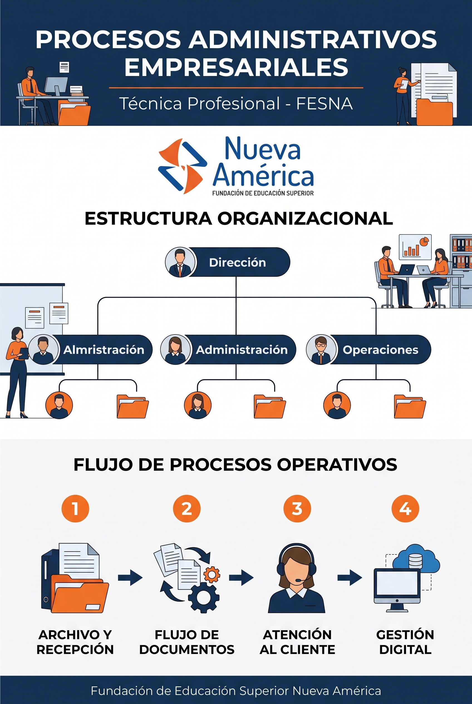

Organigrama sintético generado con asistencia de IA sobre la estructura organizacional de la institución.
Visualización jerárquica de los procesos administrativos: desde la dirección ejecutiva hasta las áreas operativas y de atención al cliente.

Infografía institucional · Estructura organizacional FESNA
Toma de decisiones estratégicas, planeación institucional y responsabilidad social empresarial.
Supervisión de procesos, gestión de talento humano y control de calidad de servicio.
Ejecución diaria de archivos, flujos de documentos y atención directa al cliente.